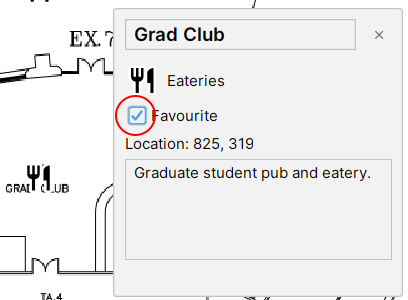

To save a selected POI as a favorite, click the "Favorite" checkbox in the selection screen. This will save the POI into the "Favorite POIs" list in the bottom-right of the map screen. Favorite POIs are accessible from any map, even if a different floor is selected.
Favorite POIs can be unmarked as favorite with the same checkbox.
Like other data, POIs marked as favorite will persist between sessions.